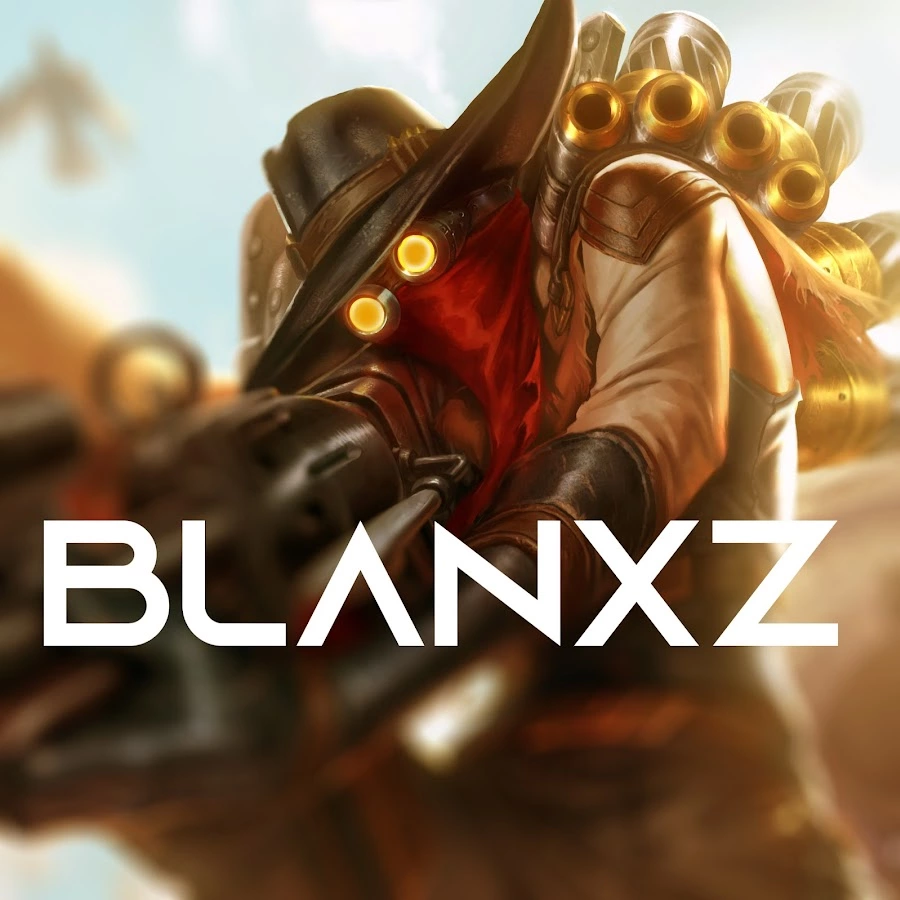

Demon's Souls
Introduciendonos a los speedruns, Blanxz hace una run any%, significa que tiene la libertad de terminar el juego cuanto antes, siempre que cumpla los requisitos para hacerlo, utilizando los glitches que quiera.

Blanxz
No es un speedrunner muy grande, con apenas 70 suscriptores en su cuenta de youtube y con su video mas popular en 2500 visitas. Su otro mejor record es un 1er puesto en el juego Mass Effect 3.